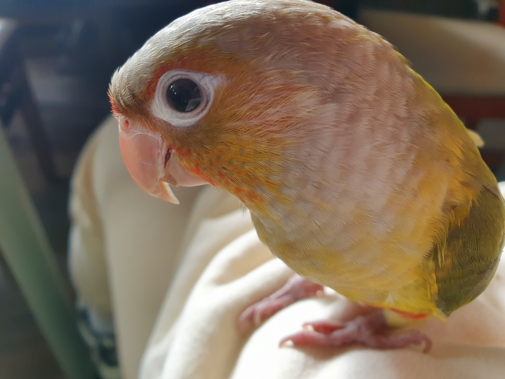

포브스 선정 세상에서 제일 말안듣는 앵무새 두 마리
천둥이
태풍이
천둥이와 태풍
김태풍

태풍이는 회사에 출근해서 사람들에게
"
안녕
"
인사하는 게 주 업무이다.
가끔은 자기를 봐달라고 새장 꼭대기에 매달려
물구나무를 선 채
가슴을 힘껏 내민다.
그는 완벽한
C자
를 표현하며 자신의 몸선을 자랑한다. 그를 만족시키기 위해 사람들은 박수를 쳐야 한다. 천둥이는 질투심이 강해서 태풍이가 관심을 받으면 자기도 관심을 받기 위해 따라 물구나무를 선다. 그러나 짧고 뚱뚱한 그의 몸매는 흡사 덜 익은 바나나와 같다.